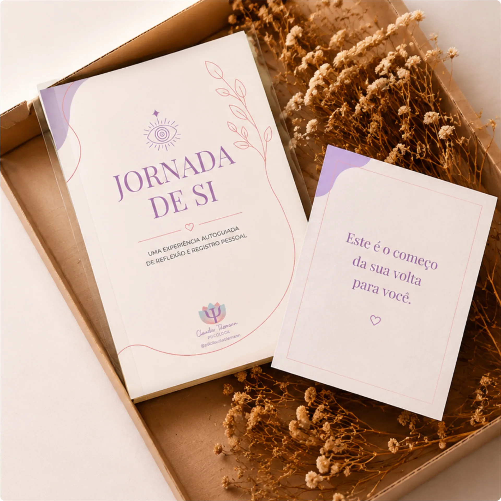

A Jornada de Si é um caminho guiado de 5 semanas para mulheres que passaram tanto tempo cuidando de todos, que esqueceram de si.
Você ficou tão ocupada sustentando a vida de todos, que deixou de sustentar quem vive essa vida: você.
Talvez você se identifique com algum desses sinais:
É olhar pra trás daqui a alguns anos e perceber que você passou tanto tempo cuidando da vida de todos, que esqueceu de viver a sua.
Você voltou a confiar na sua própria voz
Consegue dizer "não" sem culpa
Entende melhor suas emoções
Voltou a gostar da própria companhia
Sente que existe, novamente
É isso que a Jornada de Sifoi criada para construir.
Ela é um processo de reconexão construído por uma psicóloga, para conduzir você, passo a passo, de volta pra si.
Durante cinco semanas, você percorre um caminho cuidadosamente estruturado de perguntas, de escrita, reflexão e integração emocional.
Sem pressão. Sem fórmulas mágicas.
Sem precisar compartilhar sua história com ninguém.

Você começa olhando para a mulher que foi.
Você aprende a soltar o que nunca foi seu.
Você redescobre sua própria voz.
Você aprende a se tratar com a mesma gentileza que oferece aos outros.
Você escolhe, conscientemente, a mulher que deseja continuar sendo.
Ebook completo.
Para escrever quando e onde quiser.
Para quem ama o cuidado do papel.
Um guia prático para guiar sua Jornada.
Para visualizar sua Jornada de transformação.
Reflexões guiadas para te acompanhar em cada etapa.
Seleções musicais para cada momento da Jornada.
Indicações que aprofundam a sua Jornada.
Ebook completo.
Para escrever quando e onde quiser.
Para quem ama o cuidado do papel.
Um guia prático para guiar sua Jornada.
Para visualizar sua Jornada de transformação.
Reflexões guiadas para te acompanhar em cada etapa.
Seleções musicais para cada momento da Jornada.
Indicações que aprofundam a sua Jornada.
O valor de tudo isso:
Valor total separado: R$375
Hoje, tudo isso por apenas
ou 12 x R$6,93
Quero começar agoraPagamento 100% seguro via Hotmart
Garantia de 7 dias
Leia. Explore. Escreva. Sinta. Se perceber que essa experiência realmente não fizer sentido para você, basta solicitar o reembolso dentro do prazo. Sem perguntas. Sem constrangimentos.
Você não precisa encontrar uma nova versão de si.
Precisa apenas voltar para aquela que nunca deixou de existir.
Não. A Jornada de Si é uma experiência guiada de reconexão pessoal. Você recebe um material estruturado para percorrer durante 5 semanas, com exercícios de reflexão, escrita e autoconhecimento que ajudam você a olhar para si com mais clareza e intenção.
Você não precisa passar horas fazendo a Jornada. A proposta foi criada para caber na vida real: você pode reservar um momento de aproximadamente 40 a 60 minutos por semana para realizar a etapa e, ao longo dos dias, voltar às reflexões sempre que sentir vontade.
Não. Você escolhe a forma que funciona melhor para você. Pode preencher digitalmente, pelo PDF editável, ou imprimir para escrever à mão e transformar esse momento em um verdadeiro ritual de cuidado pessoal.
Não, e essa é uma diferença importante. A Jornada de Si é uma experiência autoguiada de reflexão e reconexão pessoal. Ela pode complementar um processo terapêutico, mas não substitui o acompanhamento individual de uma psicóloga ou outro profissional de saúde mental.
De jeito nenhum. Você não precisa escrever bonito, saber meditar ou já ter feito algum processo de autoconhecimento. As atividades foram pensadas para conduzir você passo a passo, mesmo que esteja começando agora.
Tudo bem. A Jornada não é uma prova. Você tem acesso ao material para fazer no seu ritmo e pode pausar, retomar uma reflexão ou voltar a uma etapa sempre que precisar. O objetivo não é fazer perfeito, é criar espaço para você.
Assim que a compra for confirmada, você recebe as orientações de acesso ao material. A partir daí, você pode começar sua Jornada e escolher o melhor momento para dar o primeiro passo.
Você terá acesso à Jornada de Si por 1 ano. Durante esse período, você poderá acessar o conteúdo e percorrer as 5 semanas no seu ritmo, sem precisar ter pressa para concluir. E tem mais: os PDFs disponibilizados podem ser baixados por você e continuam sendo seus, mesmo após o término do período de acesso à Jornada. Assim, você pode guardar, imprimir e revisitar suas reflexões sempre que quiser.